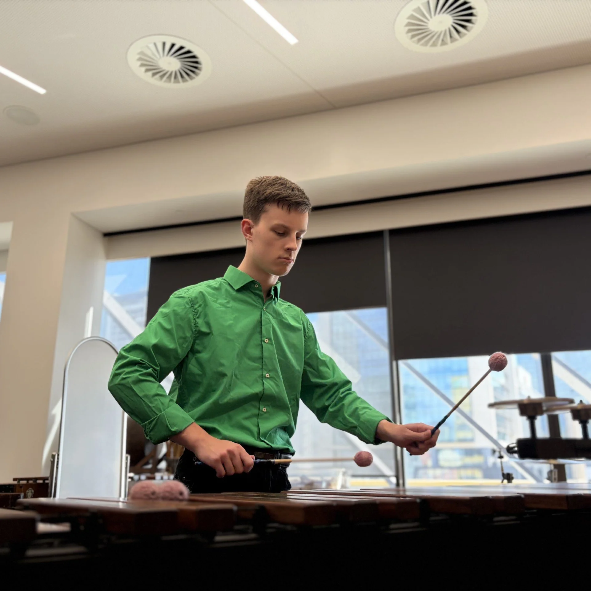

Dean Hardingham is an emerging classical percussionist, whose versatile and precision in rhythm and musical accomplishments are establishing his route as a compelling young artist within Western Australia’s musical scene. Known for his energetic stage presence and refined musicality, he brings both power and sensitivity to a wide spectrum of percussion performance, from symphonic repertoire to contemporary ensemble works.
Currently undertaking a Bachelor of Music in Classical Percussion at the West Australian Academy of Performing Arts (WAAPA), he is immersed in a rigorous and performance-driven training environment. As an active member of WAAPA’s Defying Gravity Classical Percussion Ensemble and the Symphonic Wind Ensemble, Dean continues to refine his ensemble artistry, demonstrating a strong collaborative instinct and a mature understanding of complex repertoire.
Dean has expanded his performance repertoire to greater heights thanks to his connections with large scale percussion fields around Australia and worldwide. His performances have been played alongside his fellow members of Defying Gravity, and performed with well-accomplished percussionists like Michael Askill, Pavan Kumar Hari, Fiona Digney, and Adam Tan. This has helped to spread his name across many renowned percussionists, showcasing his adaptability across a range of contemporary and minimalist works.
Beyond the stage, Dean’s commitment to musical growth is evident through his participation in international and interstate opportunities. He was selected for WAAPA’s 2024 percussion study tour to Nanjing and Guangzhou, China, building on earlier international experience during a 2019 orchestral tour to Beijing. These experiences have contributed to his broader musical perspective and cultural awareness as a developing artist.
His musical foundation is built on over a decade of dedicated study. Since 2013, Dean has undertaken weekly drum kit tuition with the Ben Lanzon School of Music, complemented by intensive classical percussion training with Kae Muto and Imogen Thomson throughout his secondary education. He completed ATAR Music (Western Music) in 2023, further strengthening his theoretical and performance capabilities.
Alongside his performance career, he is also developing as an educator. Currently working as the Primary Drum Teacher at West Coast Music School (WCMS) in Innaloo, Dean applies his technical knowledge and enthusiasm for music to support the next generation of young musicians, demonstrating a strong commitment to both teaching and mentorship.
With an expanding performance resume, international experience, and a deep-rooted passion for percussion, he continues to pursue opportunities that challenge and refine his artistry. Dean Hardingham is steadily establishing himself as a versatile and dedicated performer, working towards a sustainable and impactful professional career in music.
